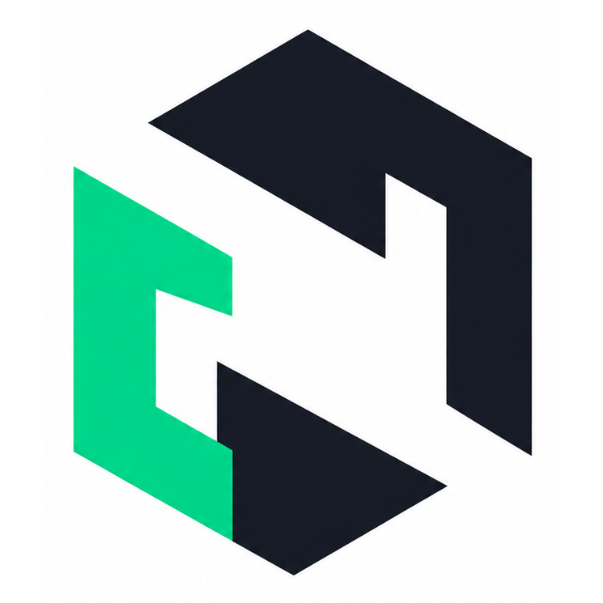

Proof-authorized accounts for Stellar stablecoin treasuries and autonomous payment agents.
Nulth is a Stellar account layer where every payment carries a zero-knowledge proof that it obeys a private policy — spend caps, allowlists, and compliance limits — without publishing those rules on-chain.
Caps, allowlists, and approvers written on-chain are readable by competitors and attackers. For a treasury, the rules are the strategy.
Enforcing limits in a backend reintroduces the trusted operator you were trying to remove — and the single point of failure with it.
When agents hold wallets, a prompt filter can be talked past. The spending limit has to be structural — enforced below the model.
Nulth removes the Ed25519 spending key from the payment path. A payment clears only if the browser produces a Groth16 proof that the amount is under the cap and the destination is on the allowlist. The proof is the signature — the account verifies it natively and authorizes itself.
Real proof-authorized USDC payments settle on testnet.
5 real attack cases in the Exploitation Deck — all rejected on-chain, 0 bytes moved.
Tests: 34 contract · 7 circuit · 5 end-to-end.
Constant verify cost · 65,536-slot private allowlist · native BN254.
| Approach | The problem |
|---|---|
| Multisig | Rules are public |
| Backend limits | Trusted operator |
| Session keys | Usually public or app-specific |
| Confidential Tokens | Amounts only; rules stay public |
| Nulth | Hidden policy, trustless enforcement |
Confidential Tokens hide amounts. Nulth hides rules. Together they make private treasury control possible.
Africa and EMEA operators moving stablecoins under compliance pressure.
Stablecoin balances that need caps, approvals, limits, and audit trails.
Enforceable spending without publishing vendor lists, strategies, or counterparty limits.
x402 and autonomous payment systems that need hard spend ceilings.
Documented outreach started: Fonbnk, Yellow Card, MoneyGram Fintech Solutions, Onafriq, and LemFi. Fonbnk responded with onboarding next steps; Yellow Card clarified B2B volume thresholds; MoneyGram confirmed receipt.
Distribution beats tech. Nulth is treating GTM as seriously as cryptography.
GitBook, STRIDE threat model, public docs, testnet metrics dashboard, and design-partner discovery.
Multi-tenant Nulth Treasury, account deployment flow, REST API, admin roles, and expanded test coverage.
Compliance dashboard, audit exports, TypeScript SDK, monitoring, and first design-partner account on testnet.
External-review remediation, mainnet deployment, SDK v1, production monitoring, and one monitored pilot.
Security audit runs through the Audit Bank pathway and external review — funded outside this grant. Grant funds go to development, hardening, QA, docs, SDK, and mainnet deployment.
Blockchain developer and security-focused builder. Previously shipped FlowGuard, a Bitcoin Cash vesting & treasury protocol. Leads Nulth's smart-account architecture, ZK authorization flow, product engineering, and security testing.
Built Aboki, a Naira–USDC on/off-ramp — hands-on fintech and payments experience that now drives Nulth's go-to-market. Leads ecosystem outreach, design-partner discovery, the fintech pipeline, and partnerships across stablecoin infrastructure teams, cross-border fintechs, treasury operators, and Stellar ecosystem partners.
AI-use disclosure: development is AI-assisted across implementation, tests, and documentation. The cryptographic design, circuits, and on-chain contracts are human-reviewed and verified with real tests and on-chain transactions. The agent feature uses an LLM only as an intent translator; the ZK proof is the authorization.
Try the live demo — set a private policy, make a proof-authorized payment, then try to break it.